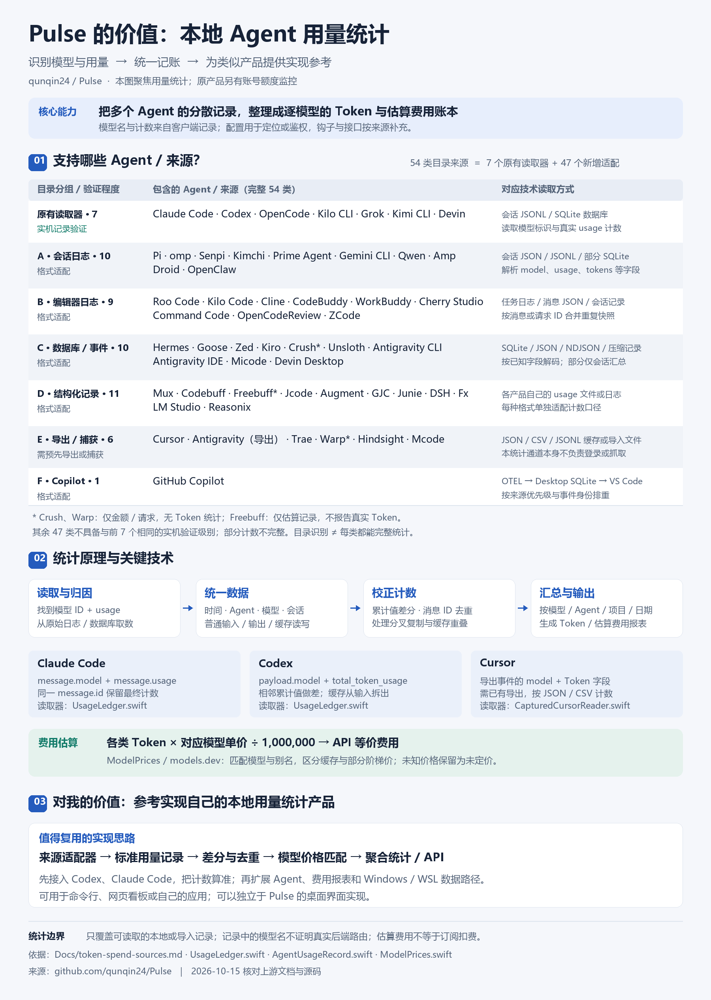

账号额度监控
复用登录态，通过服务商接口、CLI / 本地服务或状态栏回调，显示额度、余额和重置时间，并提供浮窗、提醒与多账号管理。
回答：这个账号还能用多少？
PULSE / 本地用量研究
Pulse 是 macOS 上的额度监控与用量分析应用。我们关注它最值得借鉴的部分：读懂多个 Agent 的记录，按模型算清 Token，并估算 API 等价费用。

01 / CAPABILITY
两条通道回答不同的问题。本研究聚焦“哪些模型，在这台机器上用了多少”。
复用登录态，通过服务商接口、CLI / 本地服务或状态栏回调，显示额度、余额和重置时间，并提供浮窗、提醒与多账号管理。
读取日志、数据库或已有导出，提取每次调用的模型与计数；校正后按 Agent、模型、项目和日期汇总，再匹配价格。
账号额度百分比不能直接拆成各模型消耗。单看配置中的默认模型，也无法得知每次调用的真实使用量。
02 / UNDER THE HOOD
核心是理解各工具的格式与计数语义，再把它们转换成同一份可加总的增量记录。
JSONL、SQLite、任务 JSON、OTEL、已有导出
模型 ID、时间、输入 / 输出 / 缓存、会话身份
累计做差、合并快照、排除分叉重放、处理重叠
按模型 / Agent / 项目 / 日期整理，匹配模型价格
message.model + message.usage同一回复可能写入多个内容块，输出计数持续更新。按 message.id 保留最终计数，再排除跨文件历史副本。
payload.model + total_token_usage通常由 turn context 更新模型，累计 Token 相邻做差。输入含缓存时先拆分；fork 首次基线与历史重放另行协调。
核对读取器 ↗model + input / output / cache读取导出的 JSON 或 CSV。该统计通道不自动登录或抓取；重叠导出需要协调，缺事件 ID 的覆盖可能不完整。
核对读取器 ↗ILLUSTRATION / 合成记录
逐条读日志，观察重复快照、模型切换和缓存拆分。数据仅用于解释原理。
| 模型 | 普通输入 | 缓存读取 | 输出 |
|---|
普通输入 = 输入增量 − 缓存增量；重复累计值产生 0 增量。
03 / SOURCE CATALOG
7 个原有读取器具备上游实机记录验证；其余 47 类验证程度不同，其中 6 类要求预先导出或捕获。目录识别不代表完整兼容。
| Agent / 来源 | 证据等级 | 读取与统计边界 | 依据 |
|---|---|---|---|
| Claude Codeclaude | 实机记录验证 | message.model + message.usage；同一 message.id 保留最终计数，跨文件排重。 | 来源 ↗ |
| Codexcodex | 实机记录验证 | 日志模型事件 + total_token_usage；累计差分、缓存拆分、分叉历史排重。 | 来源 ↗ |
| OpenCodeopencode | 实机记录验证 | 消息 modelID / model.id + tokens；兼容新旧表，按消息 ID 排重。 | 来源 ↗ |
| Kilo CLIkilo | 实机记录验证 | 读取 Kilo 自己的 SQLite；共享 OpenCode 格式读取器。 | 来源 ↗ |
| Grokgrok | 实机记录验证 | 本地会话记录中的模型与用量字段；不涵盖所有未实现变体。 | 来源 ↗ |
| Kimi CLIkimi | 实机记录验证 | 读取本地 CLI 会话；不声称覆盖 Kimi Work 等额外变体。 | 来源 ↗ |
| Devindevin-cli | 实机记录验证 | 数据库会被桌面端写入；不能据目录名独立证明调用来自 CLI。 | 来源 ↗ |
| Agent / 来源 | 证据等级 | 读取与统计边界 | 依据 |
|---|---|---|---|
| Pipi | 格式适配 | 按该产品实际字段解析模型与计数；部分格式可能只能得到会话汇总或不完整分类。 | 来源 ↗ |
| ompomp | 格式适配 | 按该产品实际字段解析模型与计数；部分格式可能只能得到会话汇总或不完整分类。 | 来源 ↗ |
| Senpisenpi | 格式适配 | 按该产品实际字段解析模型与计数；部分格式可能只能得到会话汇总或不完整分类。 | 来源 ↗ |
| Kimchikimchi | 格式适配 | 按该产品实际字段解析模型与计数；部分格式可能只能得到会话汇总或不完整分类。 | 来源 ↗ |
| Prime Agentprime-agent | 格式适配 | 按该产品实际字段解析模型与计数；部分格式可能只能得到会话汇总或不完整分类。 | 来源 ↗ |
| Gemini CLIgemini | 格式适配 | 按该产品实际字段解析模型与计数；部分格式可能只能得到会话汇总或不完整分类。 | 来源 ↗ |
| Qwenqwen | 格式适配 | 按该产品实际字段解析模型与计数；部分格式可能只能得到会话汇总或不完整分类。 | 来源 ↗ |
| Ampamp | 格式适配 | 按该产品实际字段解析模型与计数；部分格式可能只能得到会话汇总或不完整分类。 | 来源 ↗ |
| Droiddroid | 格式适配 | 按该产品实际字段解析模型与计数；部分格式可能只能得到会话汇总或不完整分类。 | 来源 ↗ |
| OpenClawopenclaw | 格式适配 | 不读取镜像 Codex rollouts 与 .zst 归档；跨来源镜像仍需验证。 | 来源 ↗ |
| Agent / 来源 | 证据等级 | 读取与统计边界 | 依据 |
|---|---|---|---|
| Roo Coderoocode | 格式适配 | 按该产品实际字段解析模型与计数；部分格式可能只能得到会话汇总或不完整分类。 | 来源 ↗ |
| Kilo Codekilocode | 格式适配 | 按该产品实际字段解析模型与计数；部分格式可能只能得到会话汇总或不完整分类。 | 来源 ↗ |
| Clinecline | 格式适配 | 按该产品实际字段解析模型与计数；部分格式可能只能得到会话汇总或不完整分类。 | 来源 ↗ |
| CodeBuddycodebuddy | 格式适配 | 按该产品实际字段解析模型与计数；部分格式可能只能得到会话汇总或不完整分类。 | 来源 ↗ |
| WorkBuddyworkbuddy | 格式适配 | 按该产品实际字段解析模型与计数；部分格式可能只能得到会话汇总或不完整分类。 | 来源 ↗ |
| Cherry Studiocherrystudio | 格式适配 | 按该产品实际字段解析模型与计数；部分格式可能只能得到会话汇总或不完整分类。 | 来源 ↗ |
| Command Codecommandcode | 格式适配 | 按该产品实际字段解析模型与计数；部分格式可能只能得到会话汇总或不完整分类。 | 来源 ↗ |
| OpenCodeReviewopencodereview | 格式适配 | 按该产品实际字段解析模型与计数；部分格式可能只能得到会话汇总或不完整分类。 | 来源 ↗ |
| ZCodezcode | 格式适配 | 按该产品实际字段解析模型与计数；部分格式可能只能得到会话汇总或不完整分类。 | 来源 ↗ |
| Agent / 来源 | 证据等级 | 读取与统计边界 | 依据 |
|---|---|---|---|
| Hermeshermes | 格式适配 | 按该产品实际字段解析模型与计数；部分格式可能只能得到会话汇总或不完整分类。 | 来源 ↗ |
| Goosegoose | 格式适配 | 按该产品实际字段解析模型与计数；部分格式可能只能得到会话汇总或不完整分类。 | 来源 ↗ |
| Zedzed | 格式适配 | 压缩线程依赖本地 zstd 库；缺少解码能力时报告读取说明。 | 来源 ↗ |
| Kirokiro | 格式适配 | 仅读取明确的 CLI 输入 / 输出计数；估算型 IDE 记录不纳入。 | 来源 ↗ |
| Crushcrush | 格式适配 | 仅成本，没有可报告的真实 Token 计数。 | 来源 ↗ |
| Unslothunsloth | 格式适配 | 按该产品实际字段解析模型与计数；部分格式可能只能得到会话汇总或不完整分类。 | 来源 ↗ |
| Antigravity CLIantigravity-cli | 格式适配 | 与 IDE 分开读取；只解析已知字段，全部标记为部分计数。 | 来源 ↗ |
| Antigravity IDEantigravity-ide | 格式适配 | 独立于 CLI 的原生数据库目录；共用读取器，全部标记为部分计数。 | 来源 ↗ |
| Micodemicode | 格式适配 | 按该产品实际字段解析模型与计数；部分格式可能只能得到会话汇总或不完整分类。 | 来源 ↗ |
| Devin Desktopdevin-desktop | 格式适配 | 按该产品实际字段解析模型与计数；部分格式可能只能得到会话汇总或不完整分类。 | 来源 ↗ |
| Agent / 来源 | 证据等级 | 读取与统计边界 | 依据 |
|---|---|---|---|
| Muxmux | 格式适配 | 按该产品实际字段解析模型与计数；部分格式可能只能得到会话汇总或不完整分类。 | 来源 ↗ |
| Codebuffcodebuff | 格式适配 | 按该产品实际字段解析模型与计数；部分格式可能只能得到会话汇总或不完整分类。 | 来源 ↗ |
| Freebufffreebuff | 格式适配 | 只有估算信息，不报告为真实 Token 使用量。 | 来源 ↗ |
| Jcodejcode | 格式适配 | 按该产品实际字段解析模型与计数；部分格式可能只能得到会话汇总或不完整分类。 | 来源 ↗ |
| Augmentaugment | 格式适配 | 按该产品实际字段解析模型与计数；部分格式可能只能得到会话汇总或不完整分类。 | 来源 ↗ |
| GJCgjc | 格式适配 | 按该产品实际字段解析模型与计数；部分格式可能只能得到会话汇总或不完整分类。 | 来源 ↗ |
| Juniejunie | 格式适配 | 按该产品实际字段解析模型与计数；部分格式可能只能得到会话汇总或不完整分类。 | 来源 ↗ |
| DSHdsh | 格式适配 | 按该产品实际字段解析模型与计数；部分格式可能只能得到会话汇总或不完整分类。 | 来源 ↗ |
| Fxfx | 格式适配 | 按该产品实际字段解析模型与计数；部分格式可能只能得到会话汇总或不完整分类。 | 来源 ↗ |
| LM Studiolmstudio | 格式适配 | 按该产品实际字段解析模型与计数；部分格式可能只能得到会话汇总或不完整分类。 | 来源 ↗ |
| Reasonixreasonix | 格式适配 | 按该产品实际字段解析模型与计数；部分格式可能只能得到会话汇总或不完整分类。 | 来源 ↗ |
| Agent / 来源 | 证据等级 | 读取与统计边界 | 依据 |
|---|---|---|---|
| Cursorcursor | 需导出 / 捕获 | 需先导出；读取 model 与四类 Token；重叠导出按多重集合协调，可能不完整。 | 来源 ↗ |
| Antigravity（导出）antigravity | 需导出 / 捕获 | 这里指已有导出缓存；与原生 Antigravity CLI / IDE 数据库来源分开。 | 来源 ↗ |
| Traetrae | 需导出 / 捕获 | 需先导出；缺逐事件 ID，重叠分页需协调，可能不完整。 | 来源 ↗ |
| Warpwarp | 需导出 / 捕获 | 导出格式仅金额 / 请求次数，没有 Token 字段。 | 来源 ↗ |
| Hindsighthindsight | 需导出 / 捕获 | 按该产品实际字段解析模型与计数；部分格式可能只能得到会话汇总或不完整分类。 | 来源 ↗ |
| Mcodemcode | 需导出 / 捕获 | 按该产品实际字段解析模型与计数；部分格式可能只能得到会话汇总或不完整分类。 | 来源 ↗ |
| Agent / 来源 | 证据等级 | 读取与统计边界 | 依据 |
|---|---|---|---|
| GitHub Copilotcopilot | 格式适配 | 三条本地通道按优先级排重；OTEL 与 Desktop 总量无法总是完全对齐。 | 来源 ↗ |
没有匹配的来源。可以换个关键词或切换筛选条件。
04 / PRODUCT REFERENCE
可借鉴的是来源适配、记账语义和完整性表达。这套思路可以独立用于命令行、网页看板或自己的应用。
模型从哪里取、计数是累计还是单次、缓存是否包含在输入中、消息是否被重放。这些细节比做一个图表更决定产品可信度。
阅读技术拆解 ↗从 Codex、Claude Code 开始，校对一份脱敏真实样本；支持重复扫描、模型切换和分叉记录，再逐步加入费用与更多来源。
阅读实施路线 ↗分开处理路径、发行版与命令调用；识别镜像记录，保持同一套统计口径。
指纹、文件偏移、数据库水位、取消与恢复；结果应能和全量重算对齐。
只使用可证实的账号身份；保留价格版本，区分 API 等价估算与实际账单。
按模型、Agent 和项目对比趋势与缓存；按实际需要加入预算预警或脱敏汇总。
05 / EVIDENCE
本页依据上游 b3bf083（2026-10-14 提交），于 2026-10-15 核对。上游后续改动不自动改变这份研究快照。
已完成：源码 / 文档核对、54 类目录整理、静态研究页与合成记账示例、原图接入。
研究范围：未在 macOS 运行 Pulse，未读取真实私人日志，未逐一验证全部客户端。本页也没有实现访问者本机的用量扫描功能。
来源与许可：上游 Apache-2.0，已保留许可证和少量证据快照；引导图为本次对话生成版本。
README.zh-CN.md↗支持目录Docs/token-spend-sources.md↗统计规则Docs/token-spend.md↗刷新与缓存Docs/refresh-and-data.md↗模型与计数解析Sources/Pulse/Usage/UsageLedger.swift↗标准记录Sources/Pulse/Usage/AgentUsageRecord.swift↗模型价格Sources/Pulse/Usage/ModelPrices.swift↗模型价格查找Sources/Pulse/Usage/ModelPriceLookup.swift↗模型统计汇总Sources/Pulse/Usage/ModelSpendSummary.swift↗Cursor 导出解析Sources/Pulse/Usage/Readers/CapturedCursorReader.swift↗OpenCode 数据库Sources/Pulse/Usage/OpenCodeStore.swift↗Agent 目录Sources/Pulse/Usage/SpendAgent.swift↗模型身份边界Docs/providers/codex.md↗